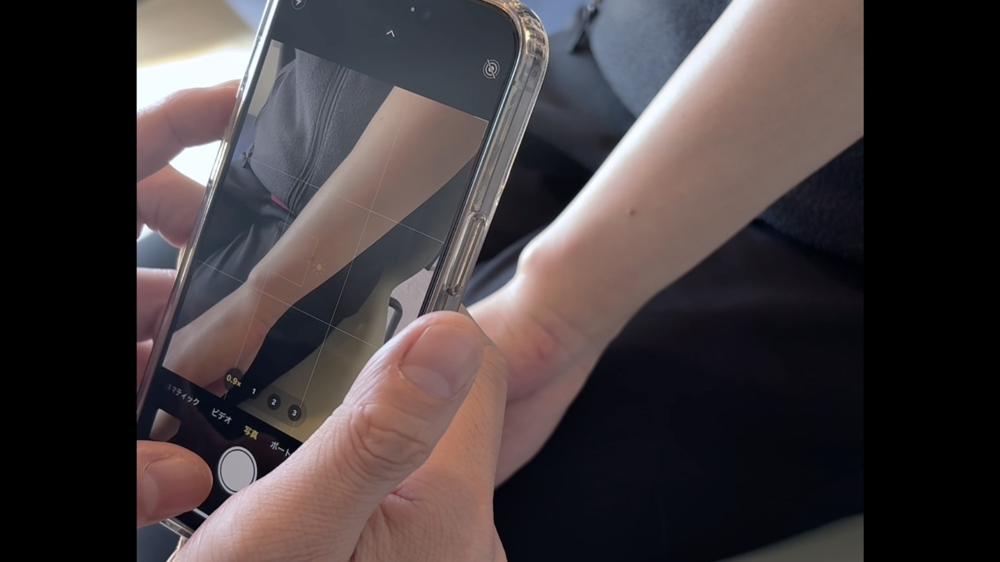

▼ こんなお悩みありませんか？
● 褥瘡の処置方針に迷う
● 薬の選択・強さが不明
● 悪性腫瘍の判断が困難
▶
チャットで送るだけ。
専用アプリ不要。いつもの操作感で
熟練の皮膚科専門医からの回答が届きます！

撮影
① 患部を撮影
皮膚科専門医チーム
仙骨部の発赤が悪化しています。
現在アズノールを使用中ですが、
滲出液が増えてきました。
画像を送ります。
現在アズノールを使用中ですが、
滲出液が増えてきました。
画像を送ります。
画像拝見しました。
黄色壊死組織と周囲の発赤があり、感染徴候を疑います。
ゲーベンクリームに変更し、洗浄を強化してください。
抗生剤の内服も検討が必要です。
黄色壊死組織と周囲の発赤があり、感染徴候を疑います。
ゲーベンクリームに変更し、洗浄を強化してください。
抗生剤の内服も検討が必要です。
承知しました。
処方変更して経過観察します。
ありがとうございます。
処方変更して経過観察します。
ありがとうございます。
② 即座に解決
 専門医
専門医
特別顧問
見明 彰 医師
Sho Miake M.D. Ph.D.
日本皮膚科学会認定 皮膚科専門医
医学博士
経験症例数、10万件以上
24時間以内に回答
開発・運営チーム

代表医師
Dr. Lion

CTO
Saibi